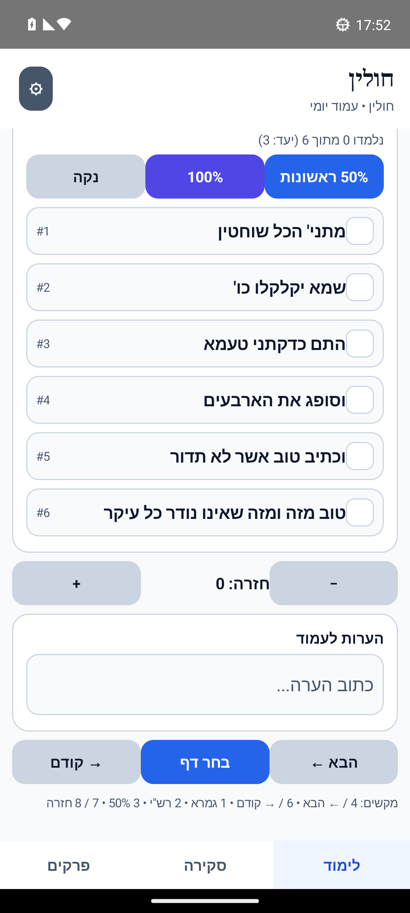
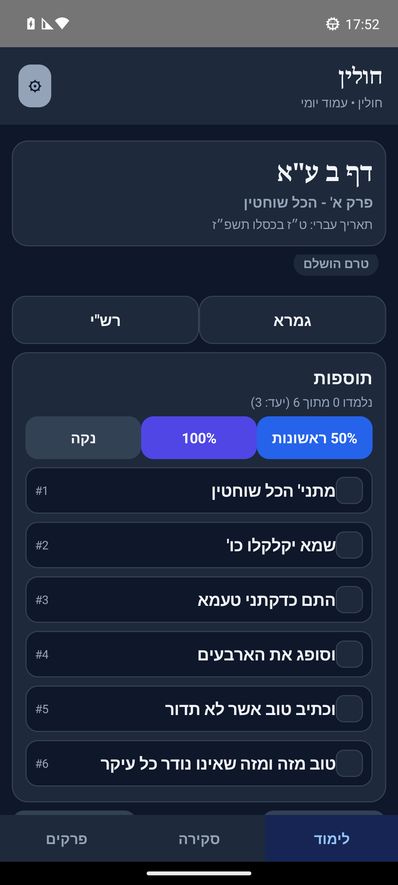

Package com.londkirs.chullin · {"model": "sdk_gphone64_x86_64", "sdk": "33", "release": "13", "abi": "x86_64", "locale": "he-IL", "screen": "1080x2400"}
| # | Action | Detail | Result | Error |
|---|---|---|---|---|
| 1 | launch | clear_data=True | passed | |
| 2 | wait_for | text='חולין' | passed | |
| 3 | assert_text | text='הכל שוחטין' | passed | |
| 4 | scroll_to | text='הבא' | passed | |
| 5 | assert_text | text='הבא' | passed | |
| 6 | screenshot | name='study-start' | passed | |
| 7 | scroll_to | text="מתני' הכל שוחטין" | passed | |
| 8 | tap | text="מתני' הכל שוחטין" | passed | |
| 9 | wait | seconds=1 | passed | |
| 10 | assert_text | text='נלמדו 1 מתוך 6' | passed | |
| 11 | tap | text="מתני' הכל שוחטין" | passed | |
| 12 | wait | seconds=1 | passed | |
| 13 | assert_text | text='נלמדו 0 מתוך 6' | passed | |
| 14 | swipe | direction='down' | passed | |
| 15 | swipe | direction='down' | passed | |
| 16 | swipe | direction='down' | passed | |
| 17 | wait | seconds=2 | passed | |
| 18 | tap | text='⚙' | passed | |
| 19 | wait_for | text='ערכת נושא' | passed | |
| 20 | tap | text='כהה' | passed | |
| 21 | wait | seconds=2 | passed | |
| 22 | screenshot | name='dark-theme' | passed | |
| 23 | wait | seconds=2 | passed | |
| 24 | tap | text='⚙' | failed | uiautomator dump failed: |

